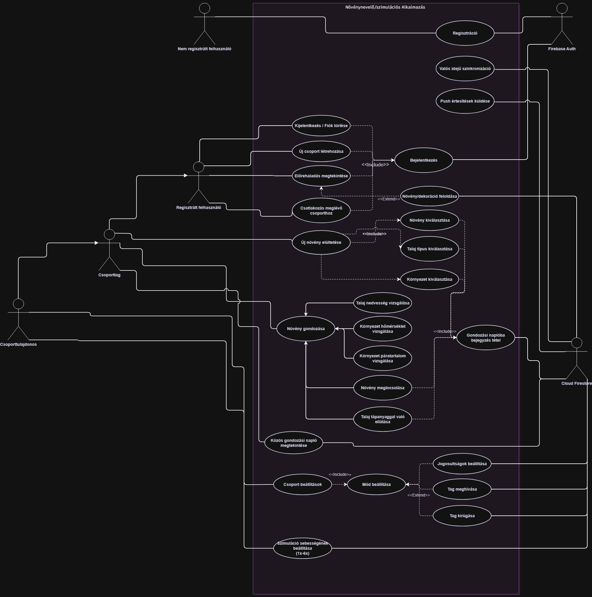

| Dátum | Verzió | Leírás | Szerző |
|---|---|---|---|
| 2026. 11. 01. | 1.0 | Teljes verzió | Suba Kinga, Zsólyomi Klaudia Vanda, Baranyovszki Kata, Zsák István, Mata Márk |
| 2026. 11. 04. | 1.1 | Végleges verzió | Suba Kinga, Zsólyomi Klaudia Vanda, Baranyovszki Kata, Zsák István, Mata Márk |
1. Bevezetés
Ennek a Szoftverkövetelmény-specifikáció (SRS) dokumentumnak a célja, hogy felvázolja és részletesen leírja az edukációs célú mobil növénygondozó és fejlődésszimulációs alkalmazásunk funkcionális és nem funkcionális követelményeit. Ez a dokumentum átfogó útmutatóként szolgál a fejlesztőcsapat számára, biztosítva, hogy minden lényeges részlet, a Firebase integrációtól kezdve a szimulációs logikán át az XP-rendszerig egyértelmű legyen, elkerülve a későbbi félreértéseket a megvalósítás során.
A dokumentum terjedelme magában foglalja a növénynevelő alkalmazás oktatási célkitűzéseit, az elvárt felhasználói élményt a diák, tanár és egyéb felhasználók számára, a Firebase-alapú rendszerarchitektúrát, valamint a mobilplatformokból adódó tervezési korlátokat. A funkcionális követelmények meghatározása mellett ez az SRS dokumentum áttekintést nyújt a projekt 13 hetes időkeretéről és a megvalósításhoz szükséges várható fejlesztési költségekről is.
Mind ezek mellett, tömören összefoglalja, minden, a szoftertverben jelenlévő belső és külsőleg is megfigyelhető mechanikát. Részletesen leírja az öntözési mechanikát, táplálási mechanikát, és az egyéb felmerülő játék/alkalmazás részleteit.
2. Áttekintés
Minimum Specifikáció
Mivel az alkalmazás célközönsége (diákok) gyakran régebbi készülékekkel rendelkezik, a hardverigényt alacsonyan kell tartani:
- Android: 6.0 (Marshmallow)
- iOS: 13.0
- RAM: 2 GB
- Tárhely: < 100 MB
- Hálózat: Aktív internetkapcsolat szükséges a felhőszinkronizációhoz.
Ajánlott Specifikáció
A tárhely igényét, mindenféle képpen alacsonyan 100MB alatt kell tartani, de legrosszabb esetbenis 100MB környékén (+- 10/15)
Ennek oka, elsősorban az alkalmazás felhő alapú így nincs szüksége nagy mennyiségű adat lokális tárolására, másodszor pedig az alkalmazás nem egy openworld játék, se nem egy kifejezetten "valós" 3D játék, ez és a célközönség figyelembe vételével leszögezhezjük, hogy az applikációban használt textúrák, képek, ikonok sem kellenek, hogy felettébb magas felbontásúak legyenek, így ismét a tárhely igény alacsonyabb lehet.
- Android: 9.0+
- iOS: 14.0+
- RAM: 4 GB (A zökkenőmentes Flutter animációk és valós idejű Firestore szinkronizáció érdekében).
- Tárhely: < 100 MB
- Hálózat: Aktív internetkapcsolat szükséges a felhőszinkronizációhoz.
A leendő felhasználók jellemzői
A célfelhasználók elsősorban általános és középiskolás diákok, 8-16 év közötti fiatalok, valamint a természettudományos tantárgyakat oktató pedagógusok. Szolgáltatásunk azonban nem csak ezen felhasználók érdeklődését keltheti fel. Ugyanis a tervezett elbűvőlő múvészeti alkotások (alkalmazásban szereplő képek, textúrák) bármely korosztályt megfoghatja, még azokat is akik nem féltétlen megszállotjai a biológiának, növényeknek vagy a természetnek. A termékünk képes lehet megszerettetni ezen témákat velük és növelni a lehetséges felhasználói kört.
Legfontosabb megvalósítandó funkciók
- Növénygondozási szimuláció: Öntözés, táplálás, fényviszonyok módosítása, amelyre a növény vizuálisan reagál (fejlődik, vagy hervad.).
- Csoportkezelés (Multiplayer): Tanárok/diákok által létrehozható csoportok (osztályok), ahol a tagok látják egymás növényeit, akár interaktálhatnak vele (ha a csoportbeállítás megengedi).
- Gondozási napló: Tevékenységek (ki, mikor, mit csinált) visszakövetése a csoporton belül.
- Jutalmazási rendszer (XP): A helyes gondozásért tapasztalati pont jár, amivel új növényfajták, háttér dekorciók oldhatók fel.
- Állítható időszimuláció: A szimuláció sebessége (1x - 6x) állítható, hogy illeszkedjen az iskolai projektek időtartamához, de otthoni kikapcsoló jellegű szimuláció/hobbi is lehessen.
Korlátozások, függőségek
Az alkalmazás kizárólag mobil eszközökre készül, méghozzá Android vagy iOS operációs rendszerű készülékekre. Ennek oka az idő igény, figyelembe véve a leggyakoribb felhasználói eszközöket, és azok operációs rendszereit juttotunk erre a megállapodásra. Emulátorral valószínűleg használható asztali számítógépeken is, de ez hivatalosan támogatva nincs így bármely ebből következendő hibáért nem vállalunk felelősséget és amennyiben a technikai hiba nem reprodukálható a fent említett eszközök valamelyikén, nem vagyunk hajlandóak azokat javítani.
A termék célját és célközönségét figyelembe véve a szimulált biológiai folyamatok egyszerűsítettek, így ezek nem modellezik a valóság 100%-át, oktatási cálok miatt elengedhetetlen az arany középutat megkeresnünk és bizonyos elemeket szimplifikálni kell.
Az alkalmazás fenntartása a projekt lezárása után nem feltétlen garantált. Mivel nem nyújtunk live service szolgáltatást az egyetlen amit garantálni tudunk, hogy a szerverek múködni fognak(1-2 év), azonban bármelyin más frissítést előállítani nem fogunk. A továbbiakban, hogy a szerverek meddig garantálnak működést nem tudjuk, függ ugyanis a projekt sikerességétől, fogadottságától és az esetleges bevételektől. Mindezeket tudomásul véve a felhőköltségeket minimalizáni kell, hogy fenntartható legyen magasabb felhasználó szám esetén is.
Feltételezés: a Firebase Authentication és Cloud Firestore szolgáltatások ingyenese kerete elegendő lesz a tesztelési és bemutatási fázisban.
Függőség: valós idejű naplózási rendszer miatt és egyéb multiplayer funkciók miatt, az alkalmazás erősen függ stabil internet kapcsolattól. A bejelentkeztetési rendszer függ a Firebase Authentication szolgáltatásától, míg az adattárolás függ a Firebase Cloud Firestore szolgáltatástól.
3. A rendszer funkciói (Use Cases)

Regisztráció
- Prekondíció: Az alkalmazás meg van nyitva, van internetkapcsolat.
- Posztkondíció: A felhasználónak regisztrálódik egy profil a megadott adatokkal.
- Main flow: A felhasználó megadja az e-mail címét és jelszavát, majd a "Regisztráció" gombra kattin.
- Exception flows: Megadott e-mail cím már foglalt vagy a jelszó nem elég erős, esetleg hálózati hiba esetén hibaüzenet jelenik meg.
Bejelentkezés
- Prekondíció: Alkalmazás meg van nyitva, van internetkapcsolat és rendelkezik a felhasználó fiókkal.
- Posztkondíció: A felhasználó sikeresen a belép a fiókjába és ezzel az alkalmzásba is.
- Main flow: A felhasználó megadja a belépési adatait. A Firebase Auth ellenőrzi azokat, majd sikeres azonosítás után beengedi a felhasználót a főmenübe.
- Exception flows: A felhasználó rossz jelszót, vagy e-mailt adott meg.
Csoport létrehozása
- Prekondíció: A felhasználó sikeresen bejelntkezett.
- Posztkondíció: Egy új csoport jön létre és a létrehozó felhasználó automatikusan megkapja a "Csoporttulajdonos" jogosultságot.
- Main flow: A felhasználó a felületen kiválasztja a csoport létrehozása opciót, megadja a csoport nevét, és megerősíti a szándékát. A rendszer generálja a csoportot.
- Exception flow: A felhasználó nem ad meg nevet a csoportnak.
Csatlakozás meglévő csoporthoz.
- Prekondíció: A felhasználó sikeresen bejelentkezetts, és rendelkezik egy érvényes meghívó kóddal vagy linkkel.
- Posztkondíció: A felhasználó csatlakozott a csoporthoz.
- Main flow: A felhasználó megadja a csoport kódját a csatlakozási felületen. A rendszer ellenőrzi a kódot és hozzáadja a tagok listájához.
- Exception flows: A megadott kód érvénytelen, lejárt, vagy a csoport időközben törlésre került.
Előrehaladás megtekintése.
- Prekondíció: A felhasználó be van jelentkezve.
- Posztkondíció: Előrehaladás menü megnyílik, ahol láthatja a megszerzett xp-t, feloldott tartalmat.
- Main flow: A felhasználó megnyitja a profilját. A rendszer lekéri és megjeleníti a pontjait és a feloldott/feloldható dolgokat.
- Alternate flow: Ha elegendő xp gyűlt össze, akkor felkínálja a növény/dekoráció feloldását.
Új növény elültetése
- Prekondíció: A felhasználó egy csoporttagja (csoporttulajdonos/csoporttag).
- Posztkondíció:Új növény jön létre az, ami bekerül a gondozási naplóba és az adatbázisba.
- Main flow: A felhasználó megnyomja az új növény ültetése gombot, majd kiválasztja a kívánt növényt, a talajt és a környezetet.
Talaj nedvesség megvizsgálása
- Prekondíció: Egy már elültetett növény van kiválasztva.
- Posztkondíció: A talaj víztartalma megjelenik egy rövid időre a felhasználó számára.
- Main flow: A felhasználó rányom egy már elültetett növényre, majd kiválasztja a "talaj nedvesség megvizsgálása" opciót.
Környezet hőmérséklet megvizsgálása
- Prekondíció: Egy már elültett növény van kiválasztva.
- Posztkondíció: A környezet hőmérséklete egy rövid időre megjelenik a felhasználó kijelzőjén.
- Main flow: A felhasználó rányom egy már elültetett növényre, majd kiválasztja a "környezet hőmérsékletének megvizsgálása" opciót.
Környezet páratartalmának megvizsgálása
- Prekondíció: Egy már elültett növény van kiválasztva.
- Posztkondíció: A környezet páratartalma egy rövid időre megjelenik a felhasználó kijelzőjén egy műszer kijelzőjén.
- Main flow: A felhasználó rányom egy már elültetett növényre, majd kiválasztja a "környezet hőmérsékletének megvizsgálása" opciót.
Növény meglocsolása
- Prekondíció: Egy már elültetett növény van kiválasztva.
- Posztkondíció: A növény talajának nedvessége megnő a locsolás időtartamától függően.
- Main flow: A felhasználó rányom egy már elültetett növényre, kiválasztja a "locsolás" opciót, majd nyomva tartja a növény körül a kijelzőt, ezzel locsolva a növényt (50ml/s a locsolási ráta).
Talaj tápanyaggal való ellátása
- Prekondíció: Egy már elültetett növény van kiválasztva.
- Posztkondíció: A növény talajának egy bizonyos tápanyag tartalma megnő.
- Main flow: A felhasználó rányom egy már elültetett növényre, kiválasztja a "tápanyaggal való ellátás" opciót.
Közös gondozási napló megtekintése
- Prekondíció: A felhasználó csoporttag.
- Posztkondíció: Megjelenik az esemény napló.
- Main flow: A felhasználó rányom a gondozási napló fülre. A rendszer lekérdezi a Cloud Firestore-ból az elmúlt időszak bejegyzéseit, és időrendben megjeleníti azokat.
- Exception flow: Nincs megjeleníthető adat, offline állapot miatt vagy más okból.
Csoport beállítások
- Prekondíció: A felhasználó csoporttulajdonos.
- Posztkondíció: Megjelenik a beállítások menü, a beállított móddal feloldódnak további beállítások.
- Main flow: A felhasználó rányom a csoportra amiben tulajdonos és azon belül a beállításokra. Kiválasztja a csoport módját (privát, co-op, observatory).
- Extend flows: A módosítás során a tulajdonos megváltoztathatja a Jogosultságokat, Új tagot hívhat meg, vagy Tagot rúghat ki, ezen döntések végén mentésre kerül.
- Exception flow: A felhasználónak nincs joga módosítani a beállításokat.
Szimuláció sebességének beállítása
- Prekondíció: A felhasználó csoporttulajdonos.
- Posztkondíció: A szimuláció sebessége módosul.
- Main flow: A felhasználó rányom a csoportra amiben tulajdonos és azon belül a beállításokra. Kiválasztja a szimuláció sebességét (1x-6x).
- Exception flow: A felhasználónak nincs joga módosítani a beállításokat.
Valós idejű szinkronizáció
- Prekondíció: Az alkalmazás fut, a felhasználó be van jelentkezve, és a készülék stabil internetkapcsolattal rendelkezik.
- Posztkondíció: Az adatok minden csoporttagnál azonnal frissülnek.
- Main flow: Cloud Firestore szerver érzékel egy adat módosítást és azonnal frissíti a többi aktív eszközt.
- Exception flow: Az internetkapcsolat megszakad. Internetkapcsolat helyreállása esetén a rendszer pótolja a szinkronizálást.
Push értesítés küldése
- Prekondíció: A felhasználó engedélyezte az üzenetek küldését az eszközön.
- Posztkondíció: A felhasználó megkapja az értesítést az esetleges adódó problémáról vagy emlékeztetésről.
- Main flow: Cloud Firestore adatbázis állapota alapján megállapítja, hogy értesítést kell küldeni, majd a rendszer elküldi a kliens eszközre.
4. Használhatóság
4.1. Nemfunkcionális követelmények
Képzési idő
Egy gyermek barát, letisztult felülettel kell rendelkeznie az alkalmazásnak, ezzel is a legjobb felhasználói élményt szolgáltatva. Legrosszabb esetben is 4 vagy 5 gomb lesz található egyszerre, egy felületen, a neveik beszédesek lesznek, hogy könnyen elsajátítható legyen a kezelése akár egy fél óra alatt is.
Feladatvégzési idő
Szimuláció révén a növénygondozás feladatai gyorsan elvégezhetőek. Hagyományos esetben napi akár 10 percet is igénybe vehet. A mi megoldásunk, a szimuláción keresztül, digitális formában nem igényel több mint 5 percet.
Más meglévő rendszerekhez képest célunk a az egyszerűbb, gyorsabb elvégzés. Míg más e-learning rendszerekben több képernyőn át törénő több kattintást igényel a miénk, sokkal egyszerűbb kisebb képernyőre fókuszáló képernyő érintés, vagy húzás.
Kezdő felhasználó tanulásának elősegítése
Új felhasználók számára, interaktív bevezető lehetőségét kínáljuk fel, hogy átvezesse őket az alkalmazás funkcióin és lehetőségein. Továbbá lehetőséget kínálunk kezdő felhasználók számára, hogy egy hiba esetén az ne legyen végzetes, hanem mint visszajelzés formájában tudják, hogy amit tettek annak a növényre nézve következményei lehetnek.
Pedagógusok vagy csoporttulajdonosok számára továbbá szolgálunk egy könnyen elérhető súgó rendszert, amely egy rövid digitális bemutatást ad egy funkcióról, ha elfelejtettük volna. Vagy korábbi bemutatóban nem bemutatott dolgokról nézhetünk útmutatót.
Hibakezelés és visszajelzés
A rendszernek egyértelmű és a legtöbb esetben jól szemléltető vizuális visszajelzést kell adnia, hogy az effektív tanulást lehetővé tegye.
Felhasználói felület hasonlósága
A betanulás elősegítésése érdekében célunk, hogy a felhasználói felület egy már bevett mintát kövessen, így az alkalmazás elemeinek layout-ja nem lesz ismeretlen még egy új felhasználónak sem.
5. Megbízhatóság
Rendelkezésre állás
A szoftver piacra dobást követően az első 1-2 hónapban ~100% -ban, hisz ilyenkor nagyon fontos a friss hiba jelentések rögzítése és minél előbbi javítása. Utána azonban mivel, már korábban említettük nem lesz live-service, esetlegesen adódó nagyon nagy hiba esetén javíthatjuk, de ezen hibákat terveink szerint már a tesztelés fázisban, legrosszabb esetben kiadás utáni 1-2 hónapban kiszűrjük és javítjuk.
MTBF
Átlagosan 2 hónap egy-egy komolyabb, a rendszer leállását vagy a gondozási funkciók szünetelését okozó hiba között. Ez a stabilitási időszak elég hosszú ahhoz, hogy a folyamatos hibák ne zavarják a felhasználókat.
MTTR
A felmerülő kritikus hibákat (például ha a növények állapota nem frissül a csoporttagoknál) a lehető leggyorsabban meg kell oldani, minimalizálva az érintett játékosok számát. Csapatunk létszámát figyelembe véve, az átlagos javítási idő 1 nagyon maximum 2 nap.
6. Teljesítmény
Válaszidő
A leggyakrabban használt funkciók, kliens oldaliak, menük közti navigáció, stb. Ezek válaszideje viszonylag gyors kategóriába esik, mely hardverfüggőek, de igyekszünk lent tartani 100-50ms alatt.
Hálózat szempontjából a válaszidő, az általunk választott szolgáltatótól függ elsősorban. Igy igyekeztünk olyat választani a képes minőségi szolgáltatást nyújtani, azonban az alkalmazásunk multiplayer oldala nem feltétlen igényel nagyon alacsony válaszidőket, így bőven bele fér akár a 1500-2000ms is.
Kapacitás
A tesztelési és a béta szakaszban 100-200 egyidejű felhasználó biztonságos kiszolgálása a cél. Publikálás után a rendszernek a Cloud Firestore-nak köszönhetően akár több ezer egyidejű felhasználót is bírnia kell teljesítményromlás nélkül, így jól skálázható.
Mivel az alkalmazás nagyrészt szöveges adatokat, numerikus értékeket (növények állapotváltozói, XP pontok) tárol és videókat, képeket nem, az adatbázis mérete az első évben várhatóan nem haladja meg a 2 GB-ot. A továbbiakban pedig, hasonlóan mérete alacsony marad ami segíti az alacsony fenntartási költségeket.
Korlátozott használhatóság idején elvárható / teljesítendő mutatók
Korlátozott vagyis offline mód alatt egyértelmű jelzést kell adni, hogy nincs hálózati kapcsolat.
Erőforrás igények
Processzor: Az alkalmazás futtatásához, tekintve hogy egy 2D egyszerű szimulációs számításokat végez, elegendő kell hogy legyen egy bármilyen több magos 2 GHz-es processzor.
RAM: Habár a minimum hardverkövetelmény 2 GB RAM, magának az alkalmazásnak a futásidejű memóriafogyasztása nem haladhatja meg a 150-200MB, hogy ne lassítsa a régebbi eszközöket se.
Háttértár kapacitás: az alkalmazás mindenféle képpen 100-150Mb alatt kell, hogy maradjon ezzel is támogatva a régebbi készülékeket.
Sávszélesség: mivel apró, kis méretű adatok cserélődnek, így egy 1-2Mbps sávszélesség is elegndő.
7. Támogatottság
A rendszerünk elkészülte utáni karbantartást, a hibajavításokat és a későbbi üzemeltetést a következő módon tervezzük megoldani:
Kódolási szabványok és architektúra: Hogy a kódunk később is átlátható és bővíthető maradjon, tartjuk magunkat a hivatalos "Effective Dart" ajánlásokhoz. A program felépítésénél a Clean Architecture elvet használjuk, így a felület, a logika és az adatbázis kezelése szépen különválik.
Hibakeresés és naplózás: Mivel éles használat közben nehéz megtalálni a rejtett hibákat, bekötjük a Firebase Crashlytics szolgáltatást. Ez automatikusan jelzi nekünk, ha az alkalmazás összeomlik valakinél, és részletes hibanaplót küld, így sokkal gyorsabban tudjuk javítani a problémákat.
Karbantartói felület: Mivel a projektre kapott időnk véges, nem írunk külön adminisztrációs felületet. Helyette a Google Firebase kész webes konzolját (Firebase Console) fogjuk használni arra, hogy kezeljük az adatbázist, a felhasználói fiókokat és a biztonsági beállításokat.
8. Tervezési korlátozások
Az alkalmazás tervezési, felépítési és megvalósítási fázisát több olyan technológiai és módszertani korlát határozza meg, melyek biztosítják a rendszer egységességét, fenntarthatóságát és a rendelkezésre álló időkeret tartását.
Felépítési követelmények: A szoftver kliens-felhő felépítésre épül. A kliens oldalon fut a natív mobilalkalmazás, amely a lokális felületi elemeket és a logika egy részét kezeli, míg a szerver oldali feladatokat (adattárolás, felhasználókezelés) a Google Firebase mint felhőszolgáltatás látja el. A Flutter keretrendszeren belül kötelezően alkalmazni kell a Clean Architecture elveti, élesen elválasztva egymástól a felhasználói felületet, a logikát és az adatbázis-kezelő réteget.
Programozási nyelvek és keretrendszerek: A kódoláshoz kizárólag a Dart programozási nyelv (3.x verzió) és a Flutter keretrendszer használható. Mivel a projekt egyik célja a cross-platform támogatás, tilos felesleges platformfüggő kódrészleteket beépíteni, kivéve azokat a hivatalos natív csomagokat, amelyek elengedhetetlenek a hardveres interfészek eléréséhez.
Fejlesztőeszközök és verziókezelés: A fejlesztők a Visual Studio Code környezetét és az Android Studio vagy az Xcode mobil emulátorát használhatják. A forráskód verziókövetése a Git rendszeren keresztül, egy központi GitHub repository-ban történik. A csapatmunkához a Gitflow ágazási modellt kell követni, amelyben a main a stabil verzió, a develop az integrációs ág, a funkciókat pedig külön ágakon kell kidolgozni és később összevonni.
Újrafelhasználható komponensek: A fejlesztési idő optimalizálása érdekében a megbízható, széles körben tesztelt és hivatalos csomagtárból származó könyvtárak építhetők be.
Fejlesztési módszertan: A projekt az agilis szoftverfejlesztési elveken alapul. A haladást heti megbeszélésekkel és a projektmenedzserrel történő konzultációkkal ellenőrizzük, a minőséget pedig automatizált egységtesztekkel és komponenstesztekkel biztosítjuk.
9. Online dokumentáció és Help rendszer
Az alkalmazás elsődleges célközönsége a 8-16 éves diákok köréből kerül ki, illetve oktatási segédeszközként is funkciónál, elengedhetetlen, hogy a szoftver egy beépített, intuitív és könnyen áttekintető súgórendszerrel is rendelkezzen amely külső böngészők megnyitása nélkül is teljeskörű tájékoztatást nyújt.
Interaktív bevezető: Az alkalmazás első alkalommal történő indításakor vagy új fiók regisztrációját követően egy vizuális, lépésről lépésre haladó bemutató indul el. Ez az interaktív útmutató grafikus elemekkel és rövid leírásokkal vezeti végig a felhasználót a legfontosabb alapműveleteken: bemutatja az új növény elültetésének menetét, a virtuális eszközök használatát, valamint a locsolás és tápanyag utánpótlási mechanikákat is.
Súgó és GYIK: A képernyőn és a funkcióknál (például csoportbeállítások felület) egy diszkrét, de könnyen észrevehető súgó ikon érhető el. Erre rákattintva egy felugró ablakban jelenik meg az adott funkció tömör, az adott kontextusba illeszkedő egyszerűbb magyarázata.
Csoportvezetői kéziköny: A tanárok és esetleges egyéb csoportvezetők számára a csoportbeállítások menüponton belül külön digitális útmutató biztosított. Ez részletesen ismerteti a csoportmódok sajátosságait, a jogosultságok kiosztásának és módosításának menetét, valamint tanácsot ad arra vonatkózóan, hogy a szimulációs sebességet hogyan érdemes beállítani az egyes iskolai projektekhez.
Offline elérhetőség és hibabejelentés: A súgószövegek és a statikus leírások az alkalmazásba vannak csomagolva, így azok stablit internetkapcsolat hiányában is zökkenőmentesen böngészhetőek. Amennyiben a felhasználó technikai hibába ütközik, a profil menüponton keresztül egy beépített űrlap segítségével közvetlenül hibabejelentést küldhet a fejlesztőcsapatnak.
Online wiki: A belső súgórendszer mellett egy dedikált, online elérhető tudásbázist is biztosítunk. Ez a felület a részletesebb, szöveges leírások mellett animált gifekkel és rövid videós bemutatókkal szemlélteti a komplexebb folyamatokat, mint például a csoportok szinkronizációs folyamatát vagy a növényekről szóló részletes adatokat, viselkedésüket és a növények fejlődési ciklusait. A felhőalapú frissitések és a jövőbeli verzióváltások új funkciókat hozhatnak magukkal, ezért a dokumentáció folyamatosan frissülő formában követi a szoftver változásait, ezzel biztosítva hogy a felhasználók és az érdeklődők mindig a legaktuálisabb információkhoz férjenek hozzá.
10. Felhasznált kész komponensek
Az alkalmazást nem akarjuk teljesen nulláról megírni, mert ahhoz sokkal több idő kellene, mint amennyi a projektre jut. Ezért több kész, ingyenesen használható eszközt és szolgáltatást veszünk igénybe. Ebben a részben leírjuk, hogy melyeket választottuk, és miért pont ezeket.
Keretrendszerek
Az alkalmazást a Flutter keretrendszerrel és a Dart programozási nyelvvel készítjük el. Ezt a Google fejleszti, és mobilalkalmazások építésére találták ki.
Ingyenes és nyílt forráskódú. A Flutter és a Dart is nyílt forráskódú (BSD licenc). Ez azt jelenti, hogy bárki szabadon letöltheti és használhatja őket, nem kell érte fizetni, és semmilyen megkötés nincs sem az oktatási, sem a későbbi használatra. Egy diákprojektnél ez nagyon fontos, mert nincs költségvetésünk.
Több platform támogatása. A Flutterrel elég egyszer megírni az alkalmazást, és abból Android és iOS rendszerre is elkészül a program. Ha külön írnánk meg az Androidos és az iOS-es változatot, kétszer annyi munkánk lenne, és minden javítást is kétszer kellene elvégezni. Így viszont mindkét rendszeren ugyanaz a program fut.
A Dart nyelv. A Dart objektumorientált nyelv, ezért jól illik ahhoz, amit az órákon tanultunk. Könnyen megtanulható, és kifejezetten arra készült, hogy gyorsan lehessen vele felhasználói felületet építeni.
Felületi elemek. A Flutterben megtalálható a Material Design összes alap eleme, például a gombok, a menük, a csúszkák és az animációk. Ezek az érintőképernyővel is jól használhatók, és a legtöbb dolog, ami a szimulációhoz kell, már benne van, nekünk csak össze kell raknunk.
Gyors kipróbálás. A Flutter Hot Reload nevű funkciója miatt ha átírunk valamit a kódban, a változás pár másodpercen belül látszik a telefonon vagy az emulátoron, nem kell újraindítani az egész programot. Ez sok időt spórol, főleg a felület finomhangolásánál és a hibakeresésnél. Ráadásul a hivatalos dokumentáció is részletes, így általában gyorsan megtaláljuk, amit keresünk.
Nagy közösség. A Flutterhez rengeteg kész csomag érhető el a pub.dev oldalon, például a Firebase használatához vagy az értesítések kezeléséhez. Ha elakadunk valamivel, nagy eséllyel valaki már megoldotta ugyanezt, és online megtaláljuk a választ.
Jó teljesítmény. A Flutter saját maga rajzolja ki a felületet, ezért az alkalmazás folyamatosan, 60 képkocka/másodperc sebességgel is futhat, még a régebbi és gyengébb telefonokon is. Mivel a célközönségünk sokszor nem a legújabb készüléket használja, ez nekünk különösen fontos.
Felhőalapú szolgáltatások és adatbázis-kezelő rendszerek
Az adatok tárolására és a háttérműködéshez a Google Firebase-t használjuk, azon belül is a Cloud Firestore adatbázist, a Firebase Authentication bejelentkezési szolgáltatást és a Firebase Cloud Messaging értesítési szolgáltatást. Azért döntöttünk emellett, mert ezzel nem kell saját szervert építenünk és üzemeltetnünk, ami egy ekkora csapatnak és ennyi időnek nagyon sokat számít.
Ingyenes kezdőcsomag. A Firebase Spark csomagja ingyenes. Ez elég ahhoz, hogy a fejlesztés alatt és a tesztelés, illetve a beadás idején mindent kipróbáljunk, anélkül hogy pénzt kellene rá költenünk. Ha később sokkal többen használnák az alkalmazást, akkor lehet fizetős csomagra váltani, de addig nem kell.
Valós idejű szinkronizálás. A Cloud Firestore egy NoSQL adatbázis, ami az adatok változását azonnal elküldi az összes csatlakoztatott eszköznek. Ha például egy diák meglocsolja a közös növényt, a tanár és a többi csoporttag rögtön látja a telefonján, hogy megváltozott a növény állapota, nem kell frissíteni semmit. Mivel nálunk a csoportos működés az egyik fő funkció, erre feltétlenül szükségünk van.
Kész bejelentkezés. A Firebase Authentication elintézi az e-mailes regisztrációt és a belépést. Ez azért jó, mert a jelszavak biztonságos tárolását és a bejelentkezett állapot kezelését elég nehéz jól megcsinálni, és ha hibázunk, az komoly biztonsági probléma lehet. Itt viszont egy bevált, kész megoldást kapunk.
Terhelhetőség. Az egész a Google szervereire épül, ezért ha sokan használják egyszerre az alkalmazást, akkor sem kell attól tartanunk, hogy leáll. Akár több ezer felhasználót is ki tud szolgálni, és a szerverek karbantartásával sem nekünk kell foglalkozni.
Értesítések. A Firebase Cloud Messaging segítségével a felhőből közvetlenül tudunk értesítést küldeni a telefonokra. Így emlékeztethetjük a diákokat, ha elmaradt az öntözés, vagy ha a növényük állapota rosszabbodott.
Biztonsági szabályok és kezelőfelület. A Firestore-ban szabályokat állíthatunk be arra, hogy ki mihez férhet hozzá. Így például csak az adott csoport tagjai láthatják a csoport növényeit. A Firebase webes konzolján pedig egy helyen átnézhetjük és módosíthatjuk az adatokat, a felhasználókat és ezeket a szabályokat, és ki is tudjuk próbálni, hogy jól működnek-e.
11. Interfészek
Ebben a részben azt írjuk le, hogy az alkalmazás hogyan kapcsolódik a felhasználóhoz, a telefon részeihez, a más szoftverekhez és a hálózathoz.
11.1. Felhasználói interfészek
Az alkalmazás kinézete letisztult és modern lesz, és illeszkedik a témájához, vagyis a természethez és a növénygondozáshoz. A gombok, a menük és a jelek a Material Design 3 szabványait követik, amit a legtöbb mobilalkalmazásban használnak. Ezért a felhasználók már ismerik ezeket, és nem kell sokat gondolkodniuk azon, hogyan kell használni őket, ami a fiatalabb korosztálynak is megkönnyíti a dolgot.
A grafika barátságos, színes 2D illusztrációkból áll. Ezeken látszik a növény fejlődése a magtól egészen a virágzásig, és az is, ha elhanyagolják: ilyenkor a növény elszárad, elhervad, így a felhasználó a képről is látja, hogy valamit rosszul csinált.
Kezdők. A kezdő diákok egy rövid, interaktív bevezetőt (tutorialt) kapnak, ami lépésről lépésre megmutatja az alapvető dolgokat, például az öntözést, a tápanyag adását és a műszerek leolvasását. A felületnek egyszerűnek kell lennie, és ha valaki hibázik a gondozásban, az nem lehet végzetes: a program inkább vizuálisan jelzi, hogy mi volt rossz, hogy tanuljanak belőle.
Tapasztaltabb felhasználók és tanárok. A pedagógusok és a csoporttulajdonosok olyan felületet kapnak, ahol áttekinthetik az osztályokat, összehasonlíthatják a növények állapotát, beállíthatják a szimuláció sebességét, és kezelhetik a csoport jogosultságait.
Kezdőképernyő. Az alkalmazás elindítása után ez az első, amit a felhasználó lát. Itt lehet regisztrálni vagy belépni az e-mail címmel és a jelszóval. Gyorsnak és egyszerűnek kell lennie, hogy a tanórán ne vesszen el az idő azzal, hogy mindenki bejelentkezésre vár.
Menük és gombok. A menükön keresztül érhetők el a fő funkciók, például a növény kiválasztása, az ültetés és a növény állapotának ellenőrzése. Egy képernyőn legfeljebb 4-5 gomb lesz, érthető felirattal és jól elkülönítve egymástól, hogy ne legyen zsúfolt a kép.
Gondozási eszközök. A felületen megtalálhatók azok az eszközök, amikkel a növényt gondozni lehet: az öntözőkanna a talaj nedvességének szabályozásához, a tápoldat, és a virtuális mérőműszerek, amik a hőmérsékletet, a talaj nedvességét és a páratartalmat mutatják.
Profil és csoport. A profilban a felhasználó láthatja a megszerzett XP pontjait, a szintjét és az eredményeit. Ugyanitt érhető el a csoport közös gondozási naplója is, ahol látszik, hogy ki, mikor és milyen gondozási lépést végzett el.
11.2. Hardver interfészek
Képernyőfelbontások
Az alkalmazásnak sokféle telefonon és táblagépen kell jól működnie, mert a diákok különböző készülékeket használnak. A Flutter reszponzív elrendezést tud használni, vagyis a felület magától igazodik a képernyő méretéhez. Többek között ezeket a felbontásokat támogatjuk:
- 480x800 (WVGA)
- 720x1280 (HD)
- 1080x1920 és 1080x2400 (Full HD és FHD+)
- 1440x2560 (QHD) és a szokásos táblagépes felbontások
Bemenet és kimenet
Az alkalmazást főleg érintőképernyővel lehet használni. Ide tartozik a menügombok megnyomása, a csúszkák húzása, és a kijelző nyomva tartása is, amikor a felhasználó locsol (50 ml/s sebességgel). A kimenet a telefon kijelzője, ahol a növény állapotának változásai látszanak. Ezen kívül a telefon rezgését is használjuk: egy rövid rezgés jelzi, ha egy művelet sikerült.
Hálózat
Az alkalmazáshoz végig internetkapcsolat kell, mert a mentések a felhőben vannak, és a csoportos funkciók is ezen keresztül működnek. A felhasználók Wi-Fi-t vagy mobilinternetet használhatnak, attól függően, mijük van.
Mentés a felhőbe
A felhőben tároljuk a felhasználónevet, az e-mail címet és az egyéni beállításokat. Ezen kívül ide kerülnek a megszerzett XP pontok és a feloldott növényfajták, a virtuális növények adatai (a típusuk, a fejlettségi szintjük, a nedvességük és a tápanyagszintjük), valamint a csoportok adatai és a közös napló bejegyzései.
A mentés a következőképpen működik. Az alkalmazás összegyűjti, hogy mi változott, majd ezeket az adatokat elküldi a Google Cloud Firestore adatbázisba. A Firestore a háttérben automatikusan szétküldi az újdonságokat a csoport többi tagjának is. Közben a biztonsági szabályok (Firestore Security Rules) minden olvasásnál és íráskor ellenőrzik, hogy az adott felhasználónak van-e joga hozzá.
Hang
Az alkalmazás hangot is használ, például vízcsobogást locsoláskor, vagy egy rövid hangjelzést, ha a növény fejlődési szintet lépett. Ezek a telefon hangszóróján és a vezetékes vagy Bluetooth fülhallgatón is szólnak.
11.3. Szoftver interfészek
Az alkalmazás működéséhez a következő szoftverekre és szolgáltatásokra van szükség.
Android és iOS. Az alkalmazás ezeken a mobil operációs rendszereken fut. A minimum az Android 6.0 és az iOS 13.0, de az újabb verziók (Android 9.0 és iOS 14.0 vagy újabb) ajánlottak.
Google Cloud Firestore. Ez az adatbázis, ahol az összes adat tárolva van: a felhasználók, a csoportok, a növények, a napló és az XP pontok.
Firebase Authentication. Ez intézi a regisztrációt és a bejelentkezést.
Firebase Cloud Messaging (FCM). Ezen keresztül küldjük a push értesítéseket a felhőből a telefonokra.
Firebase webes konzol. Ez a fejlesztőknek és az üzemeltetőknek van, itt lehet kezelni az adatbázist és a jogosultságokat. A felhasználók nem látják, csak mi.
11.4. Kommunikációs interfészek
Regisztráció és bejelentkezés
A felhasználók az e-mail címük és a jelszavuk megadásával regisztrálhatnak. A belépési adatokat a Firebase Authentication ellenőrzi, titkosított kapcsolaton keresztül. Ha minden rendben van, a felhasználó kap egy belépési azonosítót (tokent), amivel aztán elérheti a csoportja védett adatait.
Csoportos mód
A tanárok és a diákok létrehozhatnak egy csoportot, vagy meghívókóddal csatlakozhatnak egy meglévőhöz. A csoporton belül a tagok együtt követhetik a növények fejlődését, és megoszthatják egymás között a feladatokat. A telefonok közvetlenül a Cloud Firestore szervereivel tartják a kapcsolatot, ezen keresztül küldik és fogadják az adatokat, például az öntözéseket és az állapotváltozásokat. A szerver gondoskodik róla, hogy a növény állapota mindenkinél ugyanaz legyen, így minden csoporttag ugyanazt az aktuális állapotot látja.
Közös gondozási napló
A gondozási napló egy időrendi lista, amiben a csoport tagjai és a tanárok látják, hogy ki, mikor és mit csinált a növénnyel. A naplóbejegyzések ugyanúgy a Cloud Firestore-on keresztül jutnak el azonnal a csoport tagjaihoz. A Firestore biztonsági szabályai pedig megakadályozzák, hogy a csoporton kívüli bárki beleláthasson. A bejegyzéseket az adatbázis időponttal és a felhasználó azonosítójával együtt tárolja.
Internetkapcsolat
Az alkalmazásnak internetre van szüksége a felhős szinkronizáláshoz és a mentett növények betöltéséhez. A diákok és a tanárok készülékei titkosított (HTTPS) kapcsolaton keresztül tartják a kapcsolatot a felhőszolgáltatásokkal, így mindig a friss adatokat kapják meg. Ha a kapcsolat megszakad, az alkalmazás jelzi ezt a felhasználónak, és amikor visszajön az internet, pótolja a kimaradt szinkronizálást.
Értesítések és visszajelzés
A Firebase Cloud Messaging és a telefon saját értesítési rendszere segítségével az alkalmazás figyelmeztetést küld a diákoknak, ha a növényük állapota kritikussá válik, például ha kiszáradás fenyegeti. Emellett lesz egy belső visszajelző felület is, ahol a felhasználók közvetlenül jelezhetik a fejlesztőknek, ha valami nem működik jól (hibabejelentés).
Ezek az interfészek teszik lehetővé, hogy a felhasználók és a rendszer megfelelően együtt tudjon működni, és ezek nélkül az alkalmazás nem működne.
12. Alkalmazott szabványok
12.1. Kötelezően alkalmazandó szabványok
GDPR (Általános Adatvédelmi Rendelet): Alapvető elvárás, hogy a felhasználóink adatait az európai adatvédelmi szabályoknak megfelelően, biztonságosan kezeljük.
COPPA (Children's Online Privacy Protection Act) irányelvek: Mivel az alkalmazásunkat 8-16 éves diákok is használni fogják, különösen figyelnünk kell a kiskorúak adatainak (például az e-mail címek) védelmére és a biztonságos tárolásra.
12.2. Választás alapján alkalmazott szabványok
Material Design 3: A kinézetet a Google által kitalált Material Design elvek alapján építjük fel. Így az appunk kezelése ismerős, logikus és kényelmes lesz a felhasználóknak.
GitFlow ágazási modell: A közös programozáshoz és a verziókövetéshez a GitHubon a GitFlow módszert használjuk. Így elkerülhetjük, hogy véletlenül elrontsuk egymás kódját, mivel a fejlesztés (develop) és a stabil verzió (main) külön ágakon fut.
13. Mellékletek
1. Melléklet - Use Case diagram: A dokumentum 3.1-es pontjában hivatkozott ábra, amely bemutatja az alkalmazásunk funkcióit (usecase1.png).
2. Melléklet - Flutter dokumentáció: Az általunk használt keretrendszer hivatalos leírása, ami alapján dolgozunk (https://docs.flutter.dev/).
3. Melléklet - Firebase szolgáltatások: A háttérrendszerhez használt Cloud Firestore és a többi Google szolgáltatás hivatalos integrációs útmutatója (https://firebase.google.com/docs).